Hills, holy cities and Rajasthan in one active trip. This itinerary is built from our nights-per-place outline; the day plans, timings and changes are ours. We changed three things in the outline: Dharamshala gets two nights instead of one; Amritsar gets two instead of three; and you fly from Amritsar to Jaipur, because Amritsar to Bundi is about 800 km by road.
See it for yourself
Photos from the journey

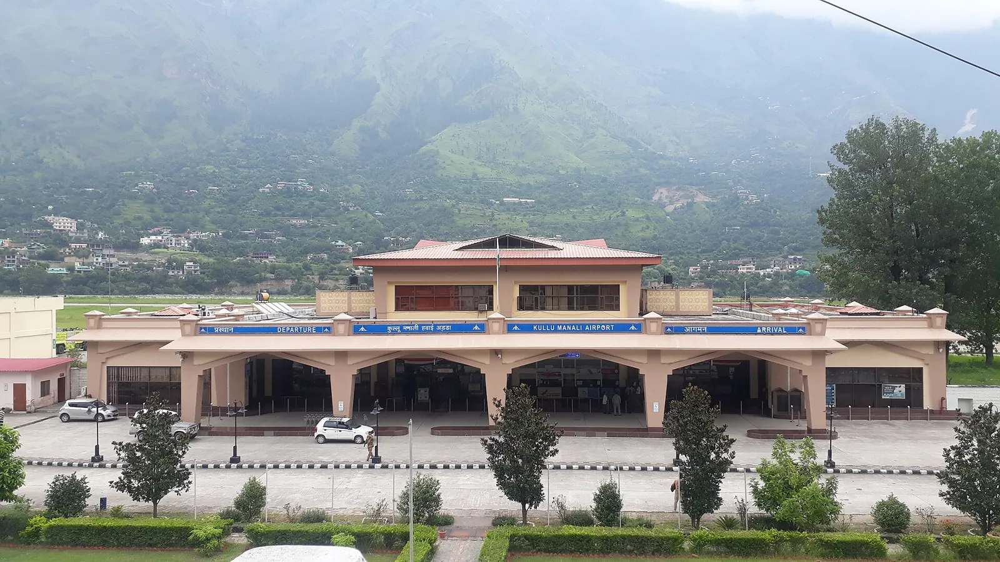
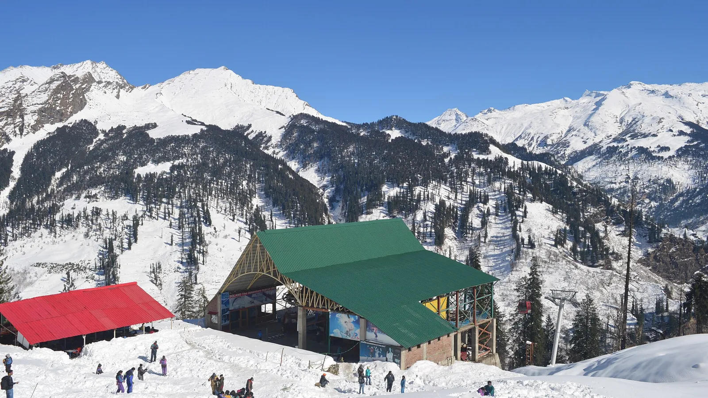
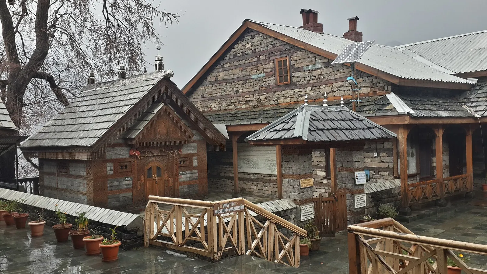
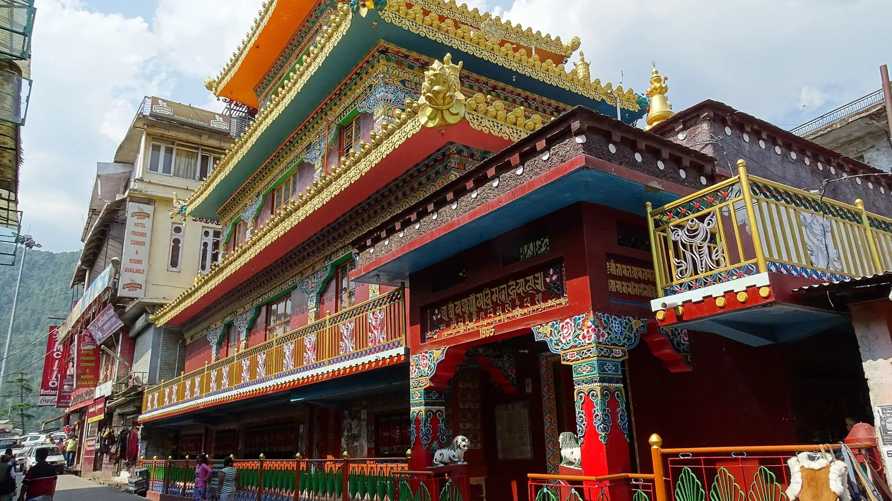
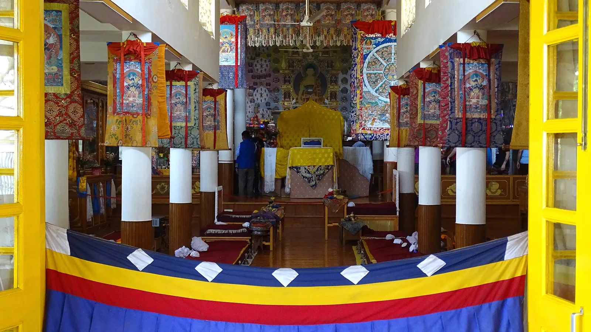
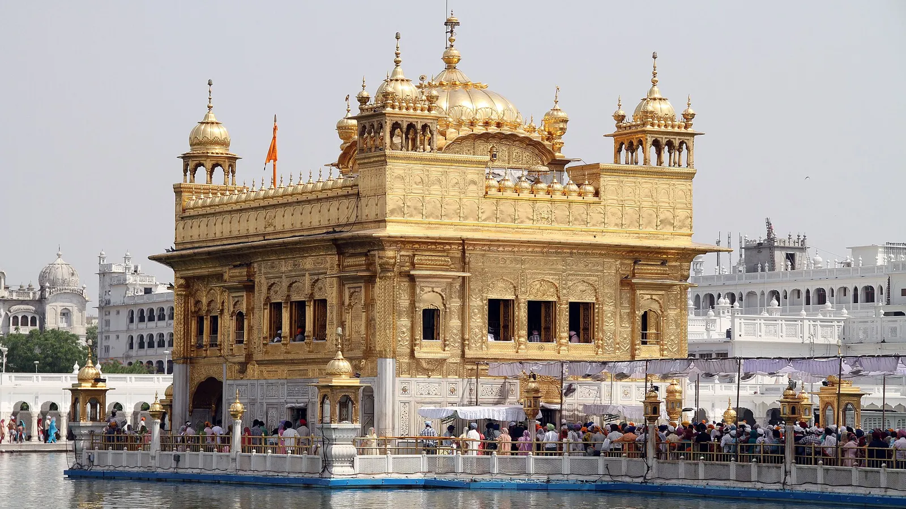
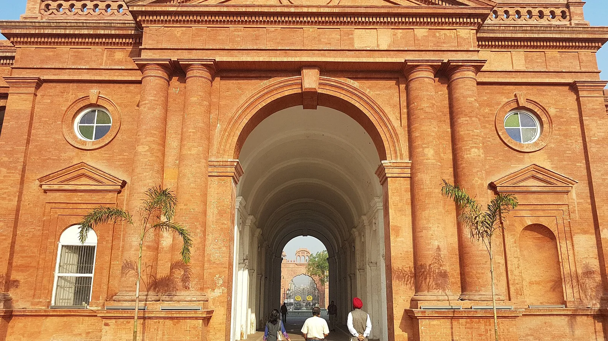

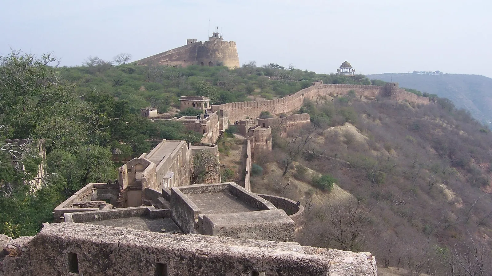
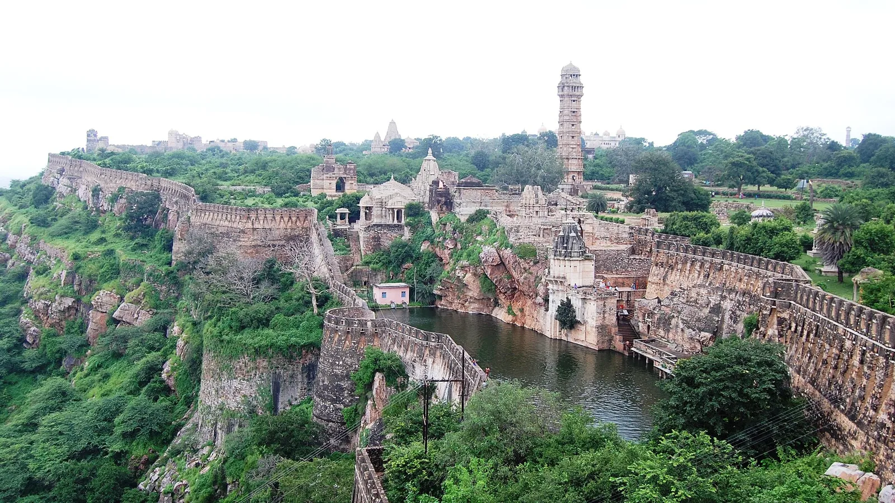
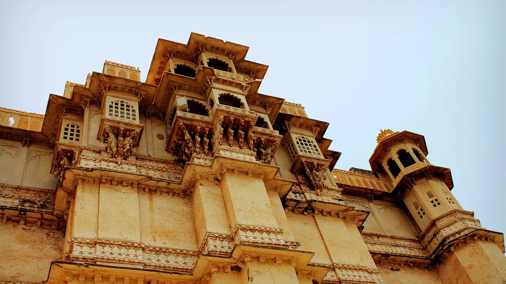
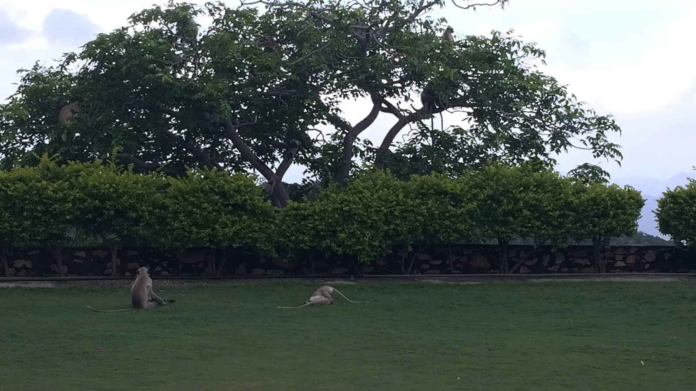
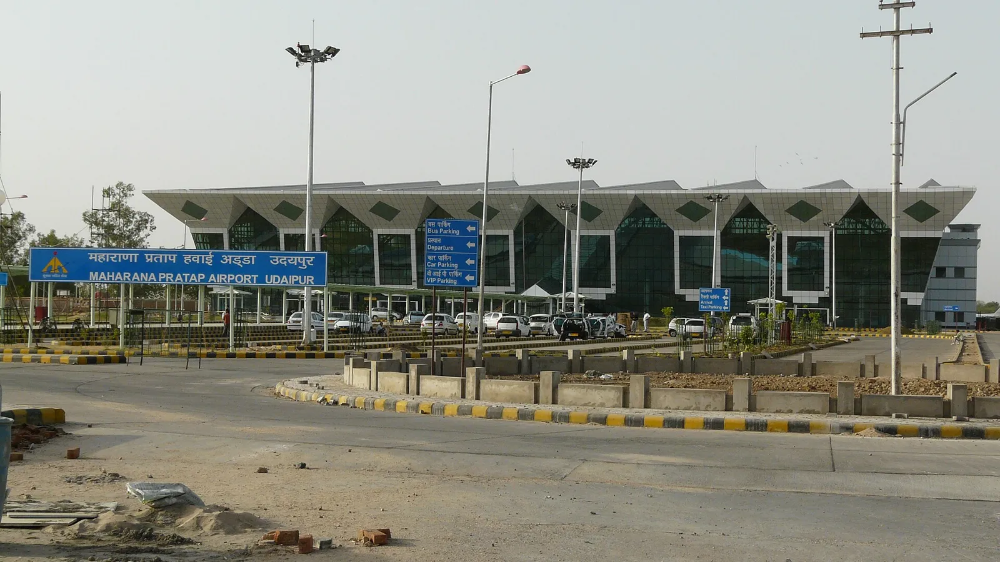
Where you go
The journey on one map
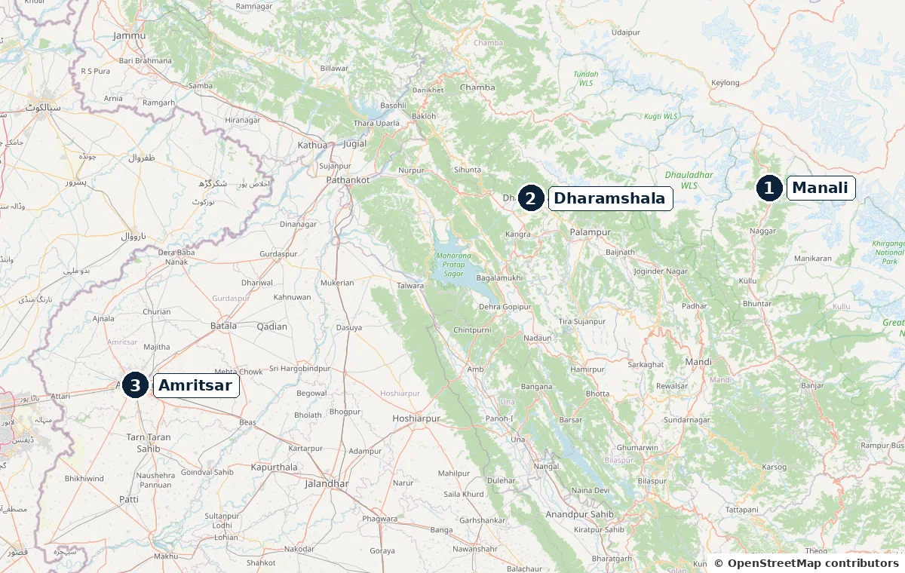
Day by day, in short
Daily travel brief
Distances are by road for the whole day. The full plan with timings comes with your detailed itinerary.
-
1
Arrive in Delhi
- Tonight's overnight Volvo or tomorrow's flight to Kullu takes you to the hills.
-
2
Fly to Kullu and up to Manali
- Kullu flights are weather-dependent; the overnight bus is the backup.
-
3
Solang Valley and the Atal Tunnel
- Atal Tunnel to Sissu: snow can close the road in winter; follow your driver's advice.
- Rohtang Pass needs an online permit and opens from about May.
-
4
Naggar and the Kullu valley
- Roerich Art Gallery: closed on Mondays.
- Kasol and Tosh in the Parvati valley are an alternative base.
-
5
To Dharamshala and McLeod Ganj
- A long hill drive.
-
6
-
7
Down to Amritsar
- Golden Temple: cover your head; shoes off.
- The temple is open all night and especially peaceful after 22:00.
-
8
Langar, Partition Museum and the border
- Partition Museum: closed on Mondays.
- Attari border ceremony: held in a reduced form since 2025.
-
9
Fly to Jaipur and drive to Bundi
- We use the flight: Amritsar to Bundi is about 800 km by road.
-
10
Taragarh Fort and the step-wells of Bundi
- Taragarh Fort and Chitrashala: monkeys in the fort: carry no food.
- Bundi is a place to slow down.
-
11
To Udaipur
- Sunset from a rooftop café over Lake Pichola.
-
12
City Palace and Lake Pichola
- Dharohar folk dance at Bagore ki Haveli in the evening.
-
13
Udaipur at your own pace
- Buy miniature paintings from the artists' own studios.
-
14
Fly home from Udaipur
- Transfer to the airport: leave 4 hours before an international flight and 3 before a domestic one.
- Pack liquids and souvenirs in checked baggage.
Local know-how
Travel hacks from our desk
UPI, cards and cash
UPI works almost everywhere, even at small stalls. Keep some cash in INR 100 and 200 notes for temples, parking, tips and places where the network is weak.
Temple and shrine etiquette
Cover shoulders and knees. Remove shoes where asked, and carry socks for hot stone floors. Leather belts and bags are not allowed inside some Jain and Hindu temples. Ask before photographing people and inside shrines.
Water and street food
Drink sealed bottled or filtered water only. Choose busy stalls where food is cooked in front of you, and skip cut fruit and ice from roadside stalls.
Driving times
Indian roads are slower than the kilometres suggest: plan on 40 to 50 km an hour on highways and much less in hills and towns. Your driver's breaks and meal stops are built into the timings.
Plugs and tipping
Plugs are Indian three-pin and two-pin, 230 volts. Tipping drivers and guides about INR 300 to 500 a day is appreciated.
When to go
Best time to visit for this journey
October: clear mountain air and comfortable Rajasthan days.
March to June and September to November, good for both the hills and Rajasthan. In July and August the hills have landslides; in winter Manali has snow and the plains are pleasant.
The package
What's included
Included
- Hotels as listed with breakfast
- Private air-conditioned car with driver for all transfers and sightseeing
- 24/7 support from Blue Diamond Voyage
- Flights Delhi to Kullu and Amritsar to Jaipur (economy)
Not included
- Flights and trains not listed as included
- Entry fees, guides, boats and activities
- Lunches and dinners unless stated
- Travel insurance
- Rohtang permit
The detailed itinerary
Some journeys are planned. Ours are crafted.
The full 14-day plan is ready: hour-by-hour timings, drive times, temple dress codes, food for your diet and a route map for every day. Tell us your dates and your city, and we'll send it to you on WhatsApp, shaped around you.
- Hour-by-hour timings
- A route map for every day
- Hotel and room details
- Visa and entry steps
- Vegetarian and Jain dining
24/7 travel desk+91 97148 59797+91 98242 21400
Photo and map credits
- Indira Gandhi International Airport: Wasiul Bahar, CC BY-SA 4.0, via Wikimedia Commons
- Kullu Manali Airport: Pinakpani, CC BY-SA 4.0, via Wikimedia Commons
- Solang Valley: Bleezebub, CC BY-SA 4.0, via Wikimedia Commons
- Naggar Castle: Akshat Sharma, CC BY-SA 4.0, via Wikimedia Commons
- McLeod Ganj: Adam Jones from Kelowna, BC, Canada, CC BY-SA 2.0, via Wikimedia Commons
- Tsuglagkhang Complex: Adam Jones from Kelowna, BC, Canada, CC BY-SA 2.0, via Wikimedia Commons
- Golden Temple: This picture has been taken by Oleg Yunakov. Contact e-mail: yunakovgmail.com. I, CC BY-SA 3.0, via Wikimedia Commons
- Partition Museum Amritsar: shankar s. from Dubai, united arab emirates, CC BY 2.0, via Wikimedia Commons
- Jaipur International Airport: Sranjanm2002, CC BY-SA 3.0, via Wikimedia Commons
- Taragarh Fort Bundi: Justin Morgan from Richmond, Virginia, USA, CC BY-SA 2.0, via Wikimedia Commons
- Chittorgarh Fort: Ssjoshi111, CC BY-SA 3.0, via Wikimedia Commons
- City Palace Udaipur: Hirumon, CC BY 3.0, via Wikimedia Commons
- Sajjangarh Monsoon Palace: Rakzika, CC BY-SA 4.0, via Wikimedia Commons
- Maharana Pratap Airport: Northside, CC BY-SA 3.0, via Wikimedia Commons
- Maps: © OpenStreetMap contributors; road routes by OSRM.